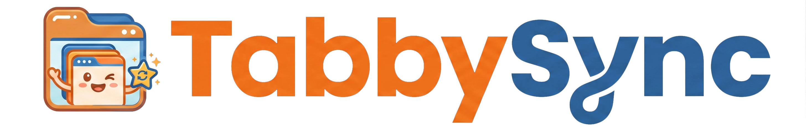
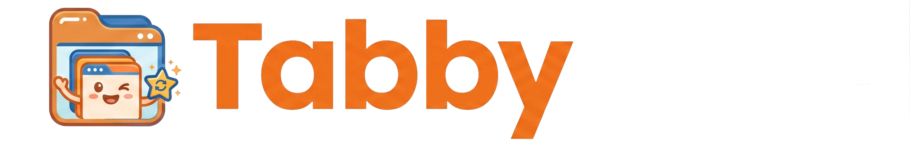

—
Not set up yet — it takes about two minutes. Open settings to choose where your
bookmarks and tabs should live.
📑
Bookmarksthe same on every computer
Saved—
Last sync—
Error
🗂️
Tabssave tabs, reopen anywhere
Saved—
Last sync—
Error
One server · one token · one sync name
Shared as